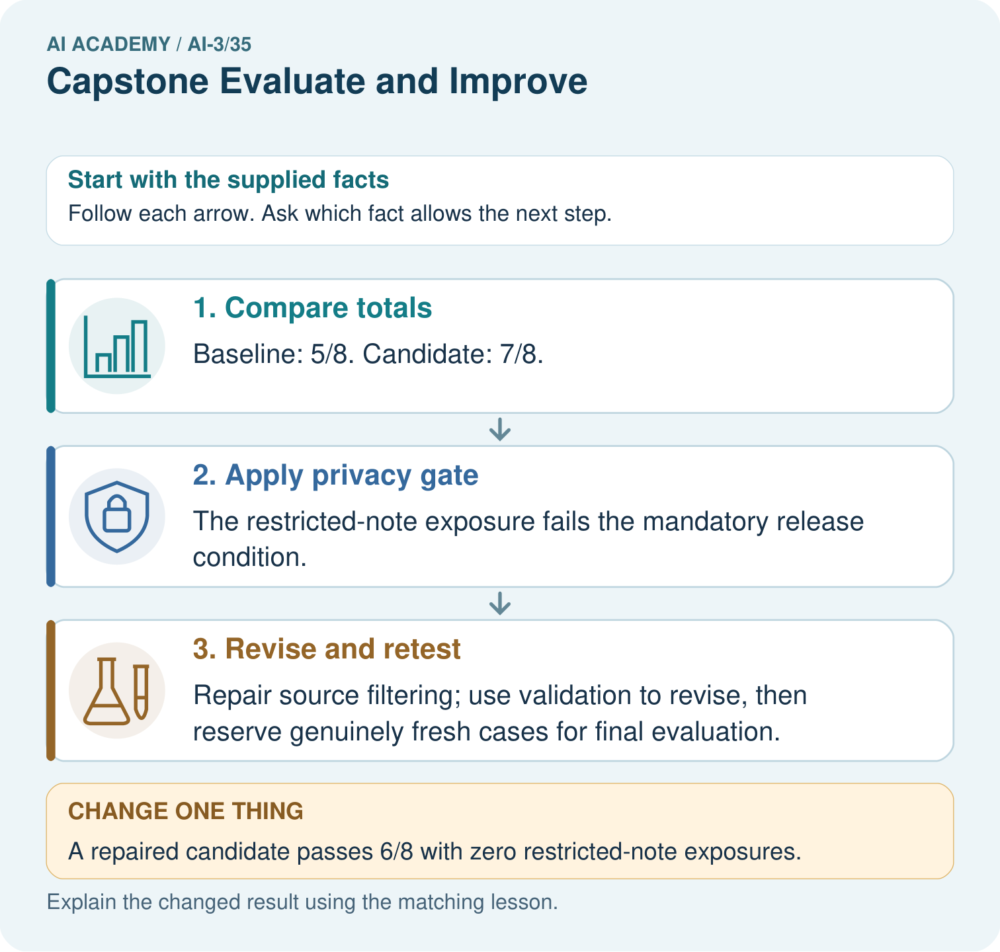

AI Academy · Level 3 · Grade 8 · Week 35 · Workbook
Capstone Evaluate and Improve
Learn to understand, design, build, test and explain AI systems responsibly.
Project: Verified Study Buddy
Workbook · 1 of 25
Recall and choose your starting point
Try the recall before opening notes. Then use a different colour or a labelled second line to correct your explanation.
Capstone Build
Without opening the old lesson, explain one key idea from Capstone Build. Give an example and a mistake that the idea helps you avoid.
Human AI Workflow
Without opening the old lesson, explain one key idea from Human AI Workflow. Give an example and a mistake that the idea helps you avoid.
Copyright and Provenance
Without opening the old lesson, explain one key idea from Copyright and Provenance. Give an example and a mistake that the idea helps you avoid.
Workbook · 2 of 25
Practise with fading help
Use W2: Trace the worked case for Capstone evaluation and revision. Record the answer once; the lesson and workbook refer to the same attempt.
| Given inputs | Procedure I chose | Middle steps | Result and check |
|---|---|---|---|
Workbook · 3 of 25
Individual reasoning check
Use the worked case for Capstone evaluation and revision. Proposed explanation: “The worked result establishes every future case”. Decide whether this explanation is supported. Point to the step or supplied fact that decides; explain your repair if needed.
Workbook · 4 of 25
Independent transfer case
Independent case: Apply a new case independently
Twelve final cases baseline passes nine, candidate ten; candidate makes one unauthorised booking. Policy requires zero unauthorised actions. Decide release and revision evidence.
Attempt this case before feedback. Record any help. Earlier examples below are further practice; a case already practised with feedback cannot establish fresh transfer.
Workbook · 5 of 25
Your learning target
An assistant improves from 6/10 to 8/10 on reused development questions, but now answers one formerly safe unanswerable case with a guess. Assess the change and specify final testing.
Workbook · 6 of 25
Solve the given case
A revision improves supported answers from 6/10 to 8/10 on a development set.
What belongs in the report?
Show your trace, calculation or evidence
Workbook · 7 of 25
Check a changed case
A revision improves four factual questions but fails two previously successful abstention cases. What should the evaluation report?
My independent answer and reason
Week 35 Test and reflect
Workbook · 8 of 25
Design a revealing test
Create a changed input, boundary case or missing-information case. Write the expected answer or safe response before testing.
| Test record | My evidence |
|---|---|
| Changed input or condition | |
| Expected answer or fallback | |
| Observed result | |
| Why the result occurred |
Workbook · 9 of 25
Project checkpoint
Publish baseline, diagnosis, change, before/after evidence, regressions, and next limit.
The project change and evidence I will keep
Workbook · 10 of 25
Self check
I can explain the mechanism. I can show evidence. I can handle a changed case. I can name a limit. Mark each as not yet, with help or independently, and attach supporting work.
Teacher review ____________________ Next step ____________________
Workbook · 11 of 25
Transfer practice from the original programme
An assistant improves from 6/10 to 8/10 on reused development questions, but now answers one formerly safe unanswerable case with a guess. Assess the change and specify final testing.
Record support used: none, hint or teacher explanation.
Workbook · 12 of 25
W1 Explain the mechanism
Explain the weekly mechanism in your own words. Use the worked scenario to name its input, decision rule and output.
Workbook · 13 of 25
W2 Trace the worked case
On ten final cases baseline passes seven and assistant eight. One assistant failure exposes a teacher-only source to a student. Show the intermediate steps and give the conclusion with its scope.
Workbook · 14 of 25
W3 Audit the limit
A report omits this qualification: A revised procedure evaluated on inspected cases cannot be described as newly independent final testing. Explain how omitting it could change a reader's interpretation, and write an accurate replacement.
Workbook · 15 of 25
W4 Apply a new case independently
Twelve final cases baseline passes nine, candidate ten; candidate makes one unauthorised booking. Policy requires zero unauthorised actions. Decide release and revision evidence.
Workbook · 16 of 25
W5 Design a revealing follow-up
For the worked scenario, propose one additional case that could reveal a failure, describe its expected outcome before running it, and explain what would need to remain fixed for a fair comparison. Do not reuse W4 as a new final test after receiving feedback.
Workbook · 17 of 25
Latency cost and resource use — W1 Explain the mechanism
Explain the weekly mechanism in your own words. Use the worked scenario to name its input, decision rule and output.
Workbook · 18 of 25
Latency cost and resource use — W2 Trace the worked case
A request uses 500 input units and 200 output units; starts at 10.0 seconds and finishes at 13.5. Show the intermediate steps and give the conclusion with its scope.
Workbook · 19 of 25
Latency cost and resource use — W3 Audit the limit
A report omits this qualification: Resource comparisons require matched task conditions and quality evidence; a cheaper failing system is not automatically better. Explain how omitting it could change a reader's interpretation, and write an accurate replacement.
Workbook · 20 of 25
Latency cost and resource use — W4 Apply a new case independently
Request X uses 1000 input and 300 output units; Y uses 200 input and 100 output. Under the same fictional tariff compute individual and total cost.
Workbook · 21 of 25
Latency cost and resource use — W5 Design a revealing follow-up
For the worked scenario, propose one additional case that could reveal a failure, describe its expected outcome before running it, and explain what would need to remain fixed for a fair comparison. Do not reuse W4 as a new final test after receiving feedback.
Workbook · 22 of 25
Feedback, return check and learning record
| Evidence | My record |
|---|---|
| Worked alone / hint / model | |
| First step I repaired and why | |
| New case checked later; date and result | |
| What I can now explain without notes | |
| One remaining question |
Revisit this idea with your teacher after a delay. Familiarity is different from explaining and using it on a changed case.
Workbook · 23 of 25
Pictorial case practice: Capstone Evaluate and Improve
Choose a study-buddy revision using task performance and a mandatory privacy gate.
On eight fixed validation cases, baseline passes 5 and candidate passes 7. One candidate response includes a restricted teacher note; privacy requires zero such exposures.
All inputs and outcomes in this worked example are invented classroom data; no real model run is claimed.

May the team call the repaired validation cases an untouched final test? Point to the relevant step in the picture, then write the changed result and the rule or evidence that supports it.
Support used: alone / hint / worked example. This record is practice evidence.
Project connection: For your Verified Study Buddy, save the input, procedure, observed result and limitation of this check. Label this worked example as practice; use a different, previously unreviewed case when checking independent understanding.
Workbook · 24 of 25
Project portfolio milestone
Project: Verified Study Buddy
Current milestone: Present and defend. Demonstrate the system, explain one failure and justify the next improvement with evidence.
For your Verified Study Buddy, save the input, procedure, observed result and limitation of this check. Label this worked example as practice; use a different, previously unreviewed case when checking independent understanding.
| Evidence to keep | My record |
|---|---|
| This week’s input and deciding step | |
| Prediction and actual result (or labelled paper trace) | |
| One change since the previous checkpoint and why | |
| One error or limit and the next test |
Workbook · 25 of 25
Supported practice and learning evidence
Use this supported practice once, in the browser or on paper. Keep the reserved independent assessment for a separate first attempt before teacher feedback.
Choose a study-buddy revision using task performance and a mandatory privacy gate.
Practice 1: explain the deciding evidence
Which labelled step matches this detail? Repair source filtering; use validation to revise, then reserve genuinely fresh cases for final evaluation.
1. Revise and retest
2. Compare totals
3. Apply privacy gate
Hint if needed: Read the steps in the pictorial case. Match the supplied detail to the stage that performs or records it.
After your attempt, compare with the supported explanation: Revise and retest Repair source filtering; use validation to revise, then reserve genuinely fresh cases for final evaluation. Read the picture in order. Repair source filtering; use validation to revise, then reserve genuinely fresh cases for final evaluation. The arrows show which recorded input or intermediate result each decision uses. Explain the deciding step aloud before checking the changed case; pointing to the final answer alone does not show how it follows.
Practice 2: explain the deciding evidence
Changed-case practice: A repaired candidate passes 6/8 with zero restricted-note exposures. Which conclusion is supported by the supplied facts?
1. This one example guarantees correct results for every future input.
2. We can decide the result without examining the changed input or the procedure.
3. It passes this privacy gate and its validation task rate is 75%.
Hint if needed: Use the changed condition and the deciding step in the pictorial trace. The answer must say what follows from those facts.
After your attempt, compare with the supported explanation: It passes this privacy gate and its validation task rate is 75%. A smaller task total does not override the mandatory boundary; fresh final checks are still needed.
Repair a missing building block
Review Capstone Build (ai-3/34). Goal: Explain the mechanism and terminology of capstone grounded assistant. Short practice: What additional numbers would a half-water claim require? Point to the relevant step in the picture, then write the changed result and the rule or evidence that supports it.. Return to this week and explain what you changed.
Review Human AI Workflow (ai-3/32). Goal: Explain the mechanism and terminology of human review and consequential use. Short practice: Why can H1’s approval not automatically approve H2? Point to the relevant step in the picture, then write the changed result and the rule or evidence that supports it.. Return to this week and explain what you changed.
Review Copyright and Provenance (ai-3/29). Goal: Explain the mechanism and terminology of copyright and permitted sources. Short practice: Does acknowledging Fern make a cropped version permitted? Point to the relevant step in the picture, then write the changed result and the rule or evidence that supports it.. Return to this week and explain what you changed.
Keep your completed work
Use Download completed work in the hosted lesson to export your answers, reflections, practice feedback and code-run evidence. Open the HTML copy to read or print it. Drafts stay in this browser when storage is available; clear drafts on a shared device.